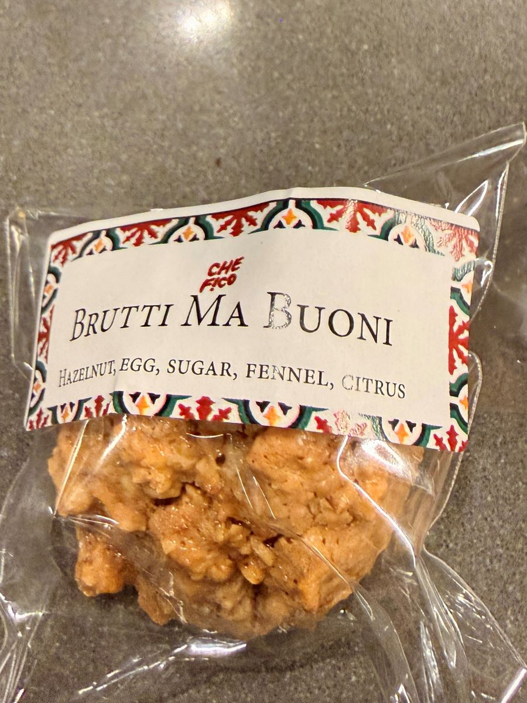

There's a kind of Italian cookie that doesn't bother pretending to be beautiful. Brutti ma Buoni — "Ugly but Good" — is all craggy edges, toasted nuts, and rustic confidence. My first real introduction to them wasn't in Italy, but at Che Fico in San Francisco, where they arrive quietly with the check. No fanfare, no flourish — just a small, perfect bite that somehow tastes even better with coffee the next morning.

Their version is unforgettable: small, dense, deeply nut‑forward, and carrying a subtle warmth you only notice after the second bite. That warmth is fennel — not enough to shout, just enough to hum beneath the hazelnuts. It's the kind of detail that tells you someone in the pastry kitchen knows exactly what they're doing.
Last Christmas, I tried to recreate them. I found a recipe online that looked promising — similar ingredients, similar method — but it leaned more toward meringue. The cookies puffed more, spread more, and lacked that tight, chewy structure Che Fico somehow achieves. They were good, but not those cookies. And they were definitely larger than the tiny, confident bites we'd been given with the check.
What surprised me most was the process. Brutti ma Buoni aren't a simple "mix and bake" cookie. They require time on the stove, then time in the oven — a two‑stage method that dries the mixture and keeps the cookies compact and chewy. It's a technique that feels old‑world, almost stubborn, but it's exactly what gives them their character.
This recipe represents my evolving attempt to master the Che Fico version — the nut‑first texture, the restrained sweetness, the subtle fennel that rounds everything out. The ingredients are simple — toasted hazelnuts, sugar, egg whites, salt, and just a whisper of crushed fennel seed — but the method is what makes them special. The mixture cooks slowly on the stovetop until thick and matte, then bakes low and gentle so the cookies stay small, chewy, and deeply aromatic. It's a process that rewards patience, and the result is a cookie that feels both rustic and refined.